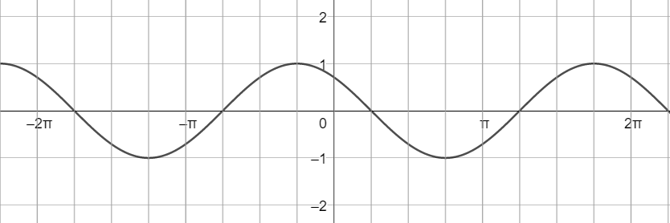
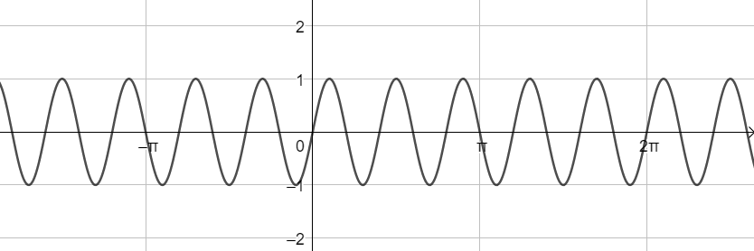
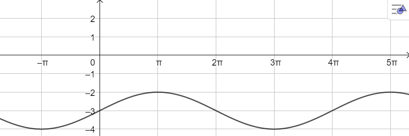
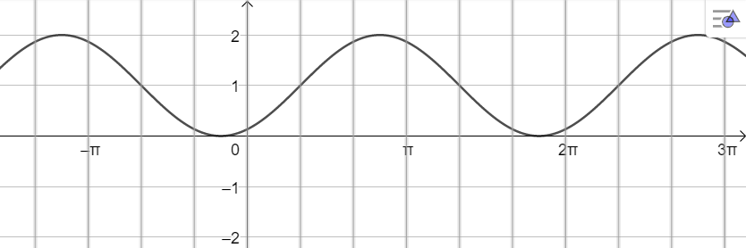

Compiti per casa
Argomenti svolti
1) Seno, coseno, tangente: definizione geometrica
[Par. 12.2, 12.3, pag. da 668 a 676]
2) Gradi v.s. Radianti
[Par. 2.1, pag. da 664 a 666]
2.1) Definizioni di grado e radiante
2.2) Un angolo di riferimento: l'angolo giro
2.3) Passare da gradi a radianti (e viceversa)
3) Visualizzazione delle funzioni trigonometriche
[Par. 12.2, pag. da 668 a 669]
3.1) Visualizzazione del seno
3.2) Visualizzazione del coseno
3.3) Visualizzazione del tangente
4) Archi associati
[Par. 12.6, 12.7, pag. da 680 a 683]
5) Grafico delle funzioni trigonometriche
5.1) Grafico del seno
5.2) Grafico del coseno
5.3) Grafico della tangente
6) Trasfromazioni del grafico delle funzioni trigonometriche
6.1) Traslazione verticale
6.2) Traslazione orizzontale
6.3) Dilatazione e contrazione verticale
6.4) Dilatazione e contrazione orizzontale
Simulazione del compito in classe
La durata del compito in classe sarà di due ore.
Vi consiglio di svolgere i seguenti esercizi nelle stesse condizioni del compito, ovvero:
-
Orologio a portata di mano.
Se un esercizio non vi viene valutate quanto insistere.
Ad un certo punto andate avanti.
-
No cellulare, neanche per controllare l'ora.
-
No calcolatrice.
-
Foglio di brutta per i calcoli.
-
Le soluzioni controllatele una volta finita la simulazione (nel compito non ci saranno le soluzioni).
Esercizio 1
L'angolo \(\alpha\) è tale che
-
\(
\pi \lt \alpha \lt \dfrac{3}{2}\pi
\)
-
\(
cos\left(\alpha\right) = -\dfrac{4}{5}
\)
Calcolare il valore di \(cotan\left(\alpha\right)\)
Soluzione:\(\,\,\,\dfrac{4}{3}\)
Esercizio 2
Svolgere la seguente espressione gonometrica
\[
\dfrac{\left[sin\left(\dfrac{2}{3}\pi\right)\right]^2 - \sqrt{3}\,tan\left(\dfrac{7}{6}\pi\right)}{cotan\left(\dfrac{5}{4}\pi\right) - cos\left(\dfrac{3}{2}\pi\right)}
\]
Soluzione: \(\,\,\,-\dfrac{1}{4}\)
Esercizio 3
Scrivere la seguente espressione in funzione del \(cos\left(x\right)\)
\[
\dfrac{\left[tan\left(\pi + \alpha\right) \, sin\left(\dfrac{3}{2}\pi + \alpha\right)\right]^2 +\,\left[sin\left(\alpha - \pi\right)\right]^2}{cos^2\left(\alpha\right) - 1}
\]
Esercizio 4
Scrivere l'espressione delle funzioni sinusoidale rappresentate di seguito:
-
A)

Soluzione: \(\,\,\,f\left(x\right) = sin\left(x + \dfrac{3}{4}\pi\right)\)
-
B)

Soluzione: \(\,\,\,f\left(x\right) = sin\left(5\pi\right)\)
-
C)

Soluzione: \(\,\,\,f\left(x\right) = sin\left(\dfrac{1}{2}x\right) - 3\)
-
D)

Soluzione: \(\,\,\,f\left(x\right) = sin\left(x - \dfrac{\pi}{3}\right) + 1\)